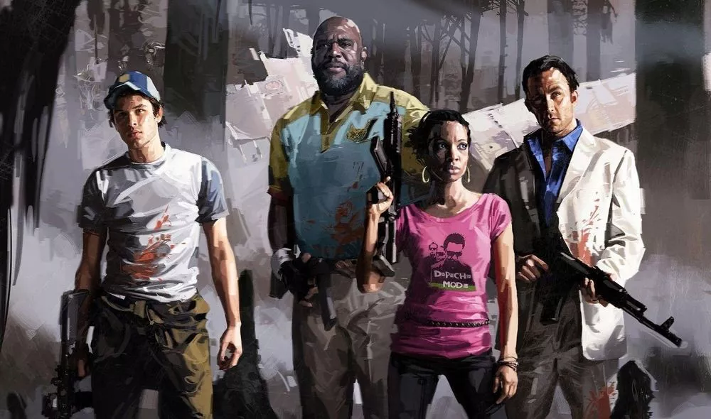
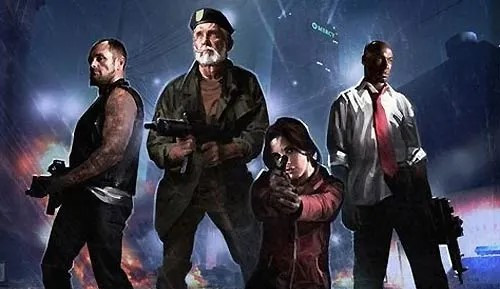

left 4 dead 2


De que va el juego
Left 4 Dead 2 es un shooter cooperativo de acción y terror en primera persona ambientado en un apocalipsis zombi, donde cuatro nuevos supervivientes deben escapar de hordas de infectados. La jugabilidad se centra en la cooperación entre jugadores (o contra la IA) para superar obstáculos y batallas intensas
creador: Mike Booth
Desarrollador: Valve Corporation
Campañas
Left 4 Dead 2 cuenta actualmente con 14 campañas jugables en todos los modos, incluyendo las seis originales del primer juego
Cronologia
1- Sin Misericordia (L4D1)
2- Curso de choque (L4D1)
3- Toque de difuntos (L4D1)
4- Aire muerto (L4D1)
5- Cosecha de sangre (L4D1)
6- El sacrificio (L4D1)
7- Punto muerto (L4D2)
8- Defunción (L4D2)
9- Feria siniestra (L4D2)
10- Pantanos (L4D2)
11- El diluvio (L4D2)
12- La parroquia (L4D2)